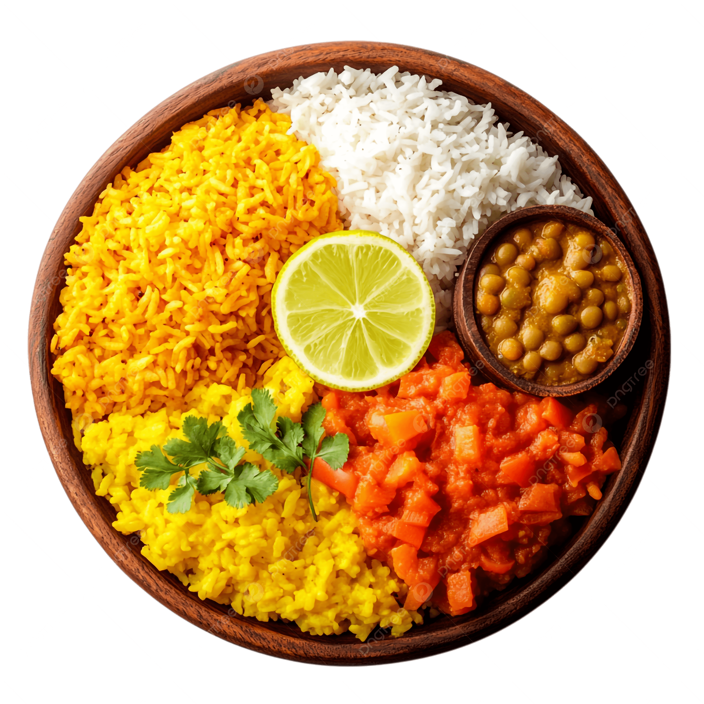

Menu
-
PRATO DO DIA

-
VEGETARIANA
 -
SOBREMESA
-
BEBIDAS


Os Restaurantes Comunitários são equipamentos públicos de segurança alimentar e nutricional que têm como finalidade preparar e comercializar refeições saudáveis a preços acessíveis. Seu objetivo é facilitar o acesso à alimentação adequada, respeitando as características culturais e os hábitos alimentares da região, com prioridade para as famílias em situação de vulnerabilidade social. Criado pelo Governo do Distrito Federal, por meio da Lei Nº 4.208, de 25 de setembro de 2008, regulamentado pelo Decreto Nº 29.975, de 27 de janeiro de 2009, o programa Restaurante Comunitário foca em garantir o Direito Humano à Alimentação Adequada (DHAA). Atualmente existem 18 Restaurantes Comunitários no DF: Arniqueira, Brazlândia, Ceilândia, Estrutural, Gama, Itapoã, Paranoá, Planaltina, Recanto das Emas, Riacho Fundo II, Samambaia, Samambaia Expansão, Santa Maria, São Sebastião, Sobradinho, Sol Nascente, Sol Nascente/Pôr do Sol e Varjão. Todos eles estão sob gestão da Subsecretaria de Segurança Alimentar e Nutricional (Subsan). As unidades estão localizadas nos centros urbanos do DF, em regiões de grande movimentação diária de trabalhadores de baixa renda como, por exemplo, as áreas centrais das cidades e que, quando possível, também estejam próximas a locais de grande circulação com transporte público disponível. É importante informar que a estrutura física dos Restaurantes Comunitários é mantida pelas empresas contratadas para prestação do serviço continuado de alimentação e nutrição. Os recursos utilizados para contratação dos serviços da rede de Restaurantes Comunitários vêm da arrecadação de impostos, taxas e tributos que todos os cidadãos pagam ao Governo. Valor das refeições e horário de atendimento Café da Manhã: R$ 0,50, servido das 7h às 9h. Exceto no Restaurante Comunitário de Brazlândia, onde o café da manhã é servido das 6h20 às 8h20. Almoço: R$ 1,00, servido das 11h às 14h. Jantar: R$ 0,50, servido das 17h às 19h Tipos de refeição oferecidos nos Restaurantes Comunitários do DF Unidades que servem café da manhã, almoço e jantar: Arniqueira, Brazlândia, Itapoã, Paranoá, Planaltina, Recanto das Emas, Samambaia Expansão, São Sebastião, Sobradinho, Sol Nascente /Pôr do Sol e Varjão. Unidades que servem café da manhã e almoço: Ceilândia, Estrututal, Samambaia e Sol Nascente. Unidades que servem somente o almoço: Gama, Riacho Fundo II, Santa Maria. Formas de pagamento Unidades que aceitam pagamento em dinheiro, PIX, cartão de crédito, cartão de débito, Cartão Prato Cheio e DF Social: Arniqueira, Itapoã, Planaltina, Recanto das Emas, São Sebastião, Samambaia Expansão, Sobradinho e Sol Nascente/Pôr do Sol e Varjão. Unidades que aceitam pagamento em dinheiro e via PIX: Brazlândia, Ceilândia, Gama, Paranoá, Riacho Fundo II, Samambaia, Santa Maria e Sol Nascente. A população em situação de rua tem direito à gratuidade nas refeições, não precisando pagar nenhum valor para acessar os Restaurantes Comunitários. As Gerências Regionais de Segurança Alimentar e Nutricional (Gersan) As Gerências Regionais de Segurança Alimentar e Nutricional (Gersan) são unidades responsáveis pela gestão e supervisão das atividades realizadas nos Restaurantes Comunitários do Distrito Federal. Cada um dos dezoito Restaurantes Comunitários conta com uma Gersan, que atua diretamente na garantia da qualidade dos serviços prestados e no cumprimento das normas higiênico-sanitárias, assegurando que as refeições oferecidas, além de nutritivas, sejam seguras. A Gersan também promove a articulação da rede pública de equipamentos de segurança alimentar e nutricional com as redes socioassistenciais e outras conexas no território de atuação. As Gersans são formadas por equipes multidisciplinares que objetivam garantir a qualidade da prestação do serviço à população.